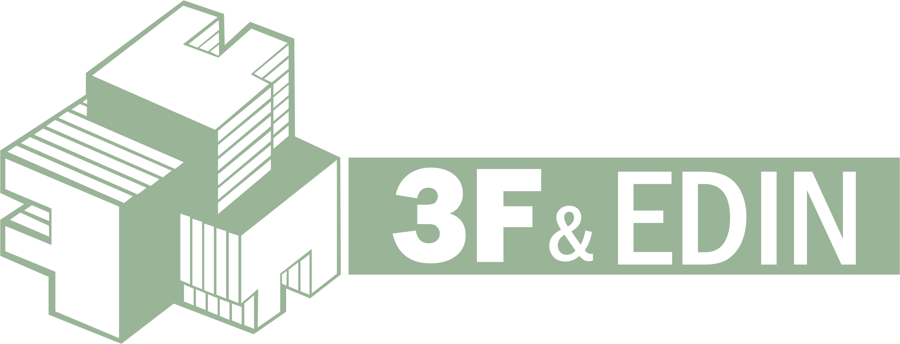

Applicant Tracking
A six-person Elinext team planned, built, and released a CV Manager with candidate, vacancy, and admin modules.
View case study
Prepared by ElinextWe saw 3F & EDIN hiring a Java/Angular Full Stack Developer while E-Recruitment needs steady web delivery, integrations, and release care.
3F & EDIN is scaling web delivery, not just filling one seat. Your careers page asks for a Java/Angular Full Stack Developer who can handle complex projects. E-Recruitment also spans job ads, candidate collection, Picking Lists, interviews, Career Day events, Microsoft Teams, and reports. That scope creates pressure on Sergio's team while hiring takes time. If the role stays open, roadmap items and release checks can pile up behind the same senior engineers.
The E-Recruitment page loads heavy media on mobile. Start by compressing product images, reserving video space, and choosing one clear first content asset.
Split the backlog into feature, integration, and release-safety lanes. It keeps recruiter flows moving while the Full Stack search continues.
Use a dedicated squad under your PO or PM for a six-week pilot, then extend only if the open role is still slowing delivery.
Stack fit: Java, Angular, .NET/C#, JavaScript, SQL Server, PostgreSQL.
Review candidate, recruiter, event, Teams, and reporting paths, then mark the changes that block near-term release work.
Pair a senior Angular engineer with your backend owner to move E-Recruitment backlog items without losing context.
Build smoke tests for candidate registration, Picking Lists, interview planning, and the most used recruiter backoffice paths.
Right-size media and reserve layout space so product pages feel stable before HR buyers or candidates act.
Elinext is a full-cycle software development company, active since 1997, with about 700 in-house specialists and no freelancers. We support web, mobile, backend, QA, AI/ML, DevOps, and management work across Europe and North America. For 3F & EDIN, the fit is enterprise delivery: Java, .NET/C#, Angular, SQL, and QA teams that work under your product owner. Our quality and security base includes ISO 9001 and ISO 27001. Teams have served Siemens, Broadcom, Volkswagen, TRUMPF, TUI, and Parrot, so the same delivery discipline can support the squad above.
A six-person Elinext team planned, built, and released a CV Manager with candidate, vacancy, and admin modules.
View case studyAngular, TypeScript, ASP.NET Core, C#, and MS SQL helped replace spreadsheets with one internal talent platform.
View case study